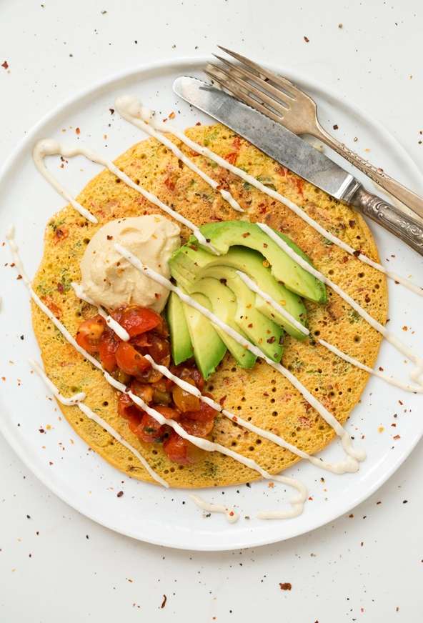

How to make Jumbo Chickpea Pancake
This meal is an interesting departure from the average pancake. This is a jumbo sized pancake with vegetables delicately placed on top for a familiar mealdone in a slightly different way.

Ingredients
- 1 green onion, finely chopped (about ¼ cup)
- ¼ cup finely chopped red pepper
- ½ cup chickpea flour (also known as garbanzo flour or besan)
- ¼ teaspoon garlic powder
- ¼ teaspoon fine grain sea salt
- 1/8 teaspoon freshly ground black pepper
- 1/7 teaspoon baking powder
- pinch red peper flakes
- ½ cup plus 2 tablespoons water
- Preheat skillet over medium heat.
- In a small bowl, whisk together the chickpea flour, garlic powder, salt, pepper, baking powder, and the red peper flakes.
- Add in water and whisk until there are no more clumps.
- Add chopped vegetables and stir
- When the skillet has reached the correct temperature (check this by flicking drops of water on the pan, if they sizzle then the pan has reached the correct temperature.) spray the pan will olive oil.
- Pour all of the batter into the pan. Let it cook for about 5-6 minutes or until you can easily slide a pancake flipper under the pancake and flip it over. Because of it's size it takes longer to cook in comparison to the average sized pancake.
- Serve on a large plate and top with your desired toppings.